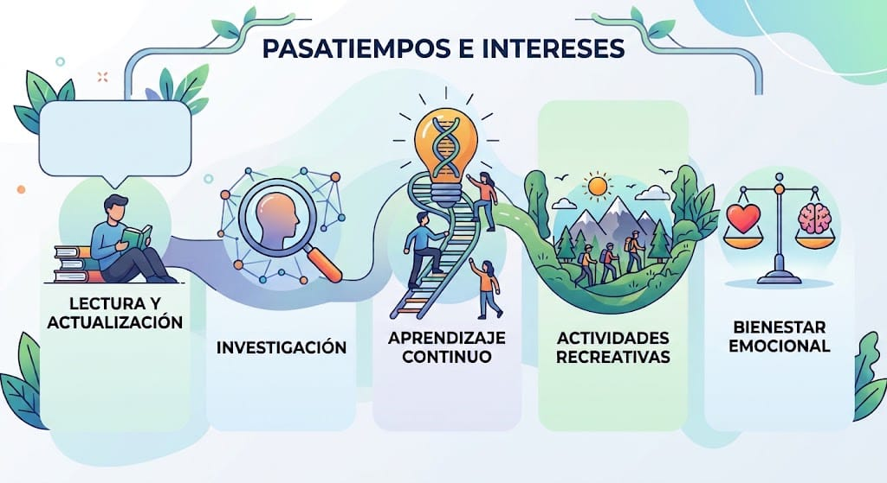

Comprensión emocional
Reconocer y comprender las emociones, los pensamientos y las experiencias que forman parte de la vida de cada persona.
Soy Mirna Concepción Véliz Alvarado. Este espacio reúne mi perfil profesional, formación e intereses en el ámbito de la psicología clínica.
La psicología es un campo de aprendizaje constante. Me interesa profundizar en la comprensión del comportamiento humano y en los recursos que favorecen el bienestar emocional.
Ver y descargar mi currículum ↗Universidad Mariano Gálvez de Guatemala
Formación universitaria a nivel de Licenciatura en Psicología, con preparación académica orientada a la comprensión del comportamiento humano, los procesos mentales y el bienestar emocional.
Número de colegiado profesional: 13,189.
Cuento con 3 años de experiencia profesional en clínica privada, brindando atención psicológica y acompañamiento a personas que buscan mejorar su bienestar emocional y su salud mental.
Mi compromiso profesional se basa en la ética, la empatía, la confidencialidad y el respeto a la individualidad de cada persona.
Ofrezco servicios de atención y orientación psicológica enfocados en promover la salud mental y el bienestar emocional.
Entre los servicios se encuentran:
Mi objetivo es proporcionar un espacio seguro, profesional y libre de juicios, donde cada persona pueda expresar sus emociones, comprender sus dificultades y desarrollar herramientas para mejorar su calidad de vida.
Un campo orientado a la comprensión de los procesos emocionales, cognitivos y conductuales, y al acompañamiento del bienestar psicológico.
Reconocer y comprender las emociones, los pensamientos y las experiencias que forman parte de la vida de cada persona.
Interés en la relación entre pensamientos, emociones y conductas, a partir de la formación en psicoterapia cognitivo-conductual.
Interés formativo en los procesos de evaluación psicológica y psicometría.
La salud mental también se relaciona con el autoconocimiento, el aprendizaje y el cuidado cotidiano.


Mis intereses reflejan la curiosidad por las personas, el conocimiento y las experiencias que enriquecen la vida.
Lectura y actualización en temas de psicología y salud mental.
Investigación sobre desarrollo humano y comportamiento.
Aprendizaje continuo y crecimiento personal.
Actividades recreativas y contacto con la naturaleza.
Interés por el bienestar emocional y la calidad de vida.

Mi presentación personal y una mirada a mi enfoque profesional.
Puedes utilizar los siguientes medios para comunicarte o conocer más sobre mi perfil.